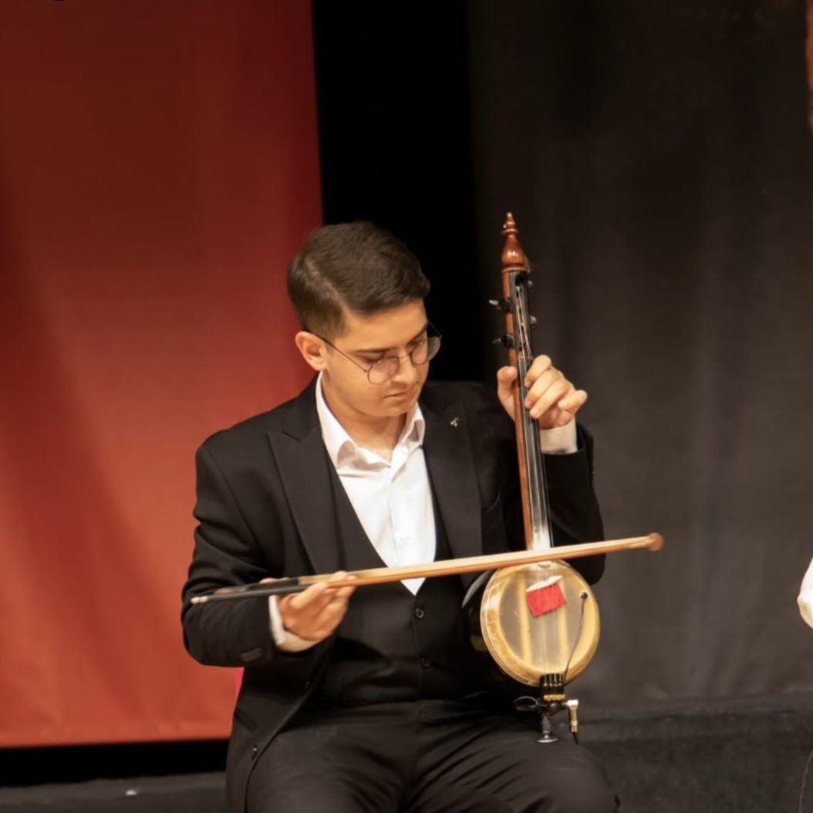
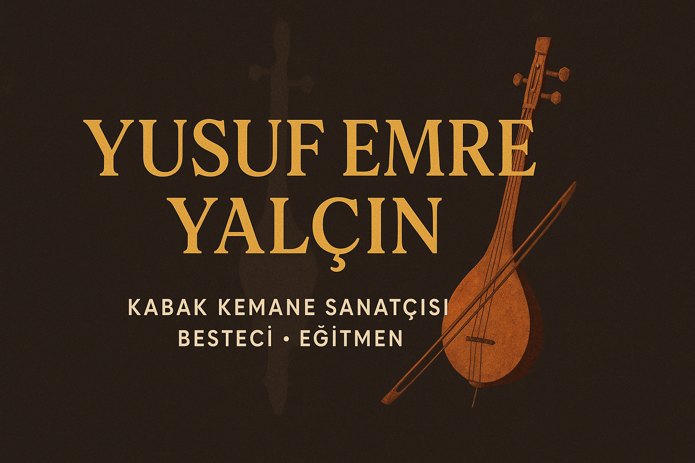
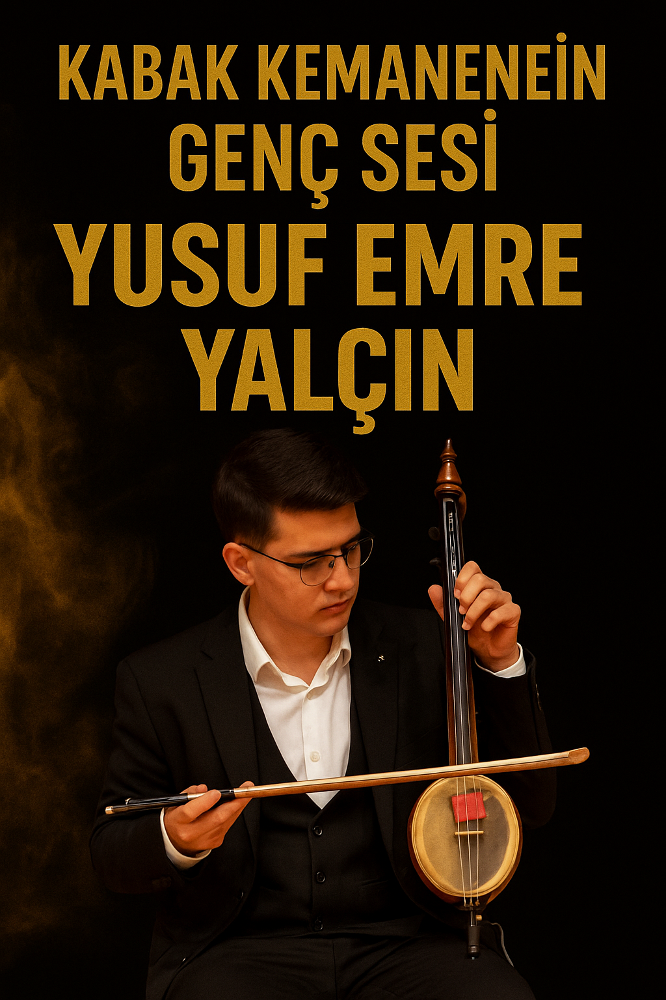
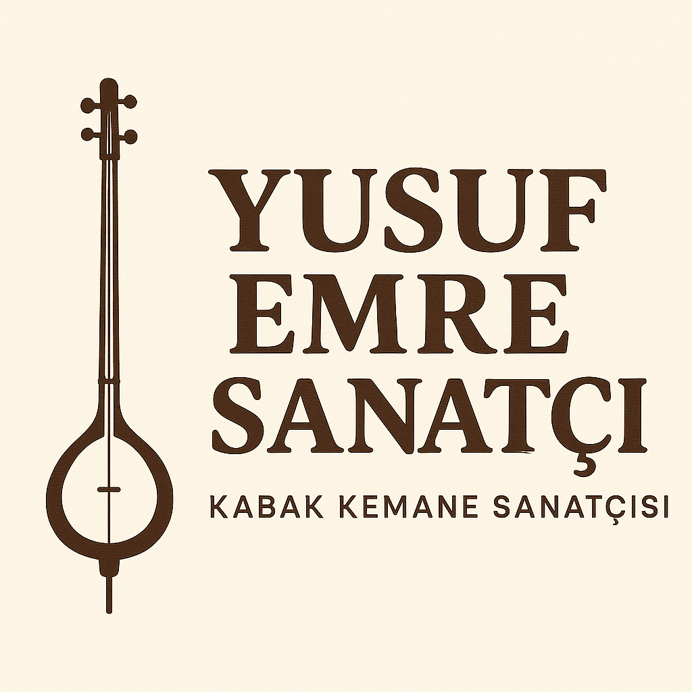
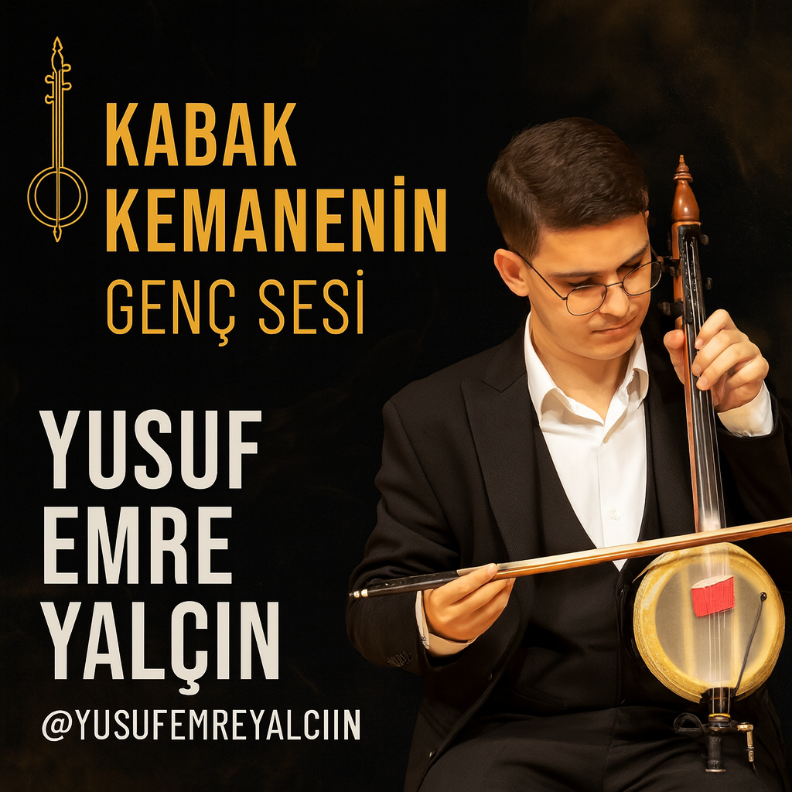
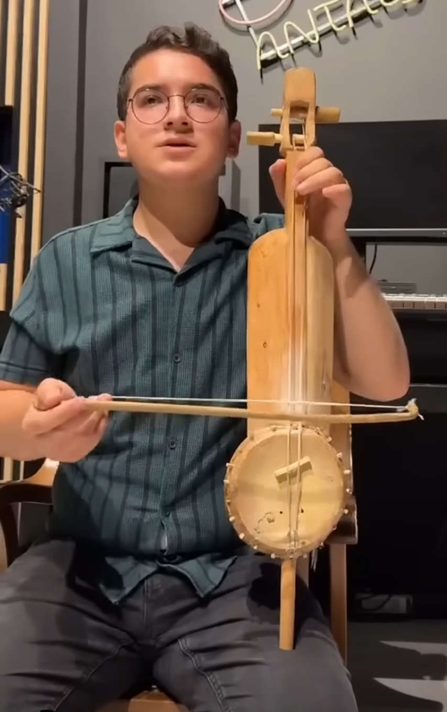

Foto Galeri

.jpeg)





Antalya doğumlu genç Türk kabak kemane ve ıklık sanatçısı. Türk halk müziğini modern yorumlarla genç kuşağa taşıyor ve genç kabak kemane sanatçıları arasında kendine yer açmayı hedefliyor.
Türkiye’de kabak kemanenin özellikle genç kuşak tarafından yeniden ilgi görmeye başladığı bu dönemde, öne çıkan isimlerden biri Yusuf Emre Yalçın’dır. Antalya doğumlu genç sanatçı, kabak kemanenin içli ve karakteristik sesini modern yorumlarla birleştirerek hem kendi yaş grubunun hem de geleneksel müzik severlerin dikkatini çekmeyi başarmıştır.
Kabak kemane, Teke Yöresi’nin kültürel mirasını taşıyan önemli bir enstrümandır. Eskiden çoğunlukla yöresel ustalar tarafından icra edilen bu çalgı, son yıllarda genç müzisyenlerin ilgisiyle yeniden sahne ışıklarına çıkmıştır. Yusuf Emre Yalçın da bu yeni neslin temsilcileri arasında özel bir yere sahiptir. Sosyal medya performansları, kısa videoları ve sahne deneyimleri sayesinde enstrümana modern bir bakış açısı kazandırmakta ve kabak kemaneyi genç kitlelere ulaştırmaktadır.
Genç sanatçının repertuvarı; Teke Yöresi ezgilerinden uzun havalara, modern düzenlemelerden deneysel yorumlara kadar geniş bir yelpazeyi kapsar. Onu diğer genç kabak kemane sanatçılarından ayıran en belirgin özellik, enstrümanı “duyguyu aktaran bir ses” olarak görmesi ve her performansında içten bir ifade dilini ön planda tutmasıdır.
Düzenli içerikler üretmesi, sahnelerde yer alması ve kabak kemaneyi geniş kitlelere tanıtması, Yusuf Emre Yalçın’ı genç kabak kemane sanatçıları arasında yükselen bir değer hâline getirmiştir. Hem sahne performansları hem de dijital platformlarda sergilediği istikrarlı çalışmalar, onu geleceğin güçlü isimlerinden biri yapmaktadır.
Bugün Yusuf Emre Yalçın, kabak kemane icrasındaki doğal yeteneği, müzikal disiplin ve yenilikçi yaklaşımıyla dikkat çekmekte; kabak kemane sanatının geleceğinde adı daha sık duyulacak genç sanatçılar arasında gösterilmektedir.
Yusuf Emre Yalçın, 2005 yılında Antalya’da doğan genç bir kabak kemane ve ıklık sanatçısıdır. Küçük yaşlardan itibaren müziğe ve özellikle Türk halk ezgilerine ilgi duymaya başlamıştır. Ailesinin ve çevresindeki müzisyenlerin desteğiyle, kısa sürede kabak kemane ile güçlü bir bağ kurmuştur ve genç kabak kemane sanatçıları arasında adını duyurmaya başlamıştır.
Yusuf Emre, kabak kemaneyi ve ıklık çalgısını yalnızca bir hobi olarak değil, duygularını ifade ettiği enstrümanlar olarak görmektedir. Düzenli çalışmaları, sahne tecrübeleri ve provaları sayesinde hem teknik hâkimiyetini hem de sahne duruşunu geliştirmeye devam etmektedir. Kabak kemane ve ıklık sanatçıları arasında kendine özgü bir yorum dili oluşturmayı hedeflemektedir.
Repertuvarında; Teke Yöresi başta olmak üzere Anadolu’nun farklı bölgelerinden türküler, uzun havalar ve oyun havalarının yanı sıra gençlerin severek dinleyebileceği modern düzenlemeler de yer almaktadır. Geleneksel tavrı korurken kabak kemanenin ve ıklık çalgısının sesini yeni neslin anlayacağı bir dille buluşturmaya önem verir. Böylece hem geleneksel ustaların hem de yeni nesil kabak kemane ve ıklık sanatçılarının çizgisini bir araya getirmeye çalışır.
Performanslarını Instagram, YouTube ve diğer dijital platformlarda paylaşarak hem kendi yaşıtlarına hem de geniş bir dinleyici kitlesine ulaşmayı hedeflemektedir. Kısa videolar, canlı performans kayıtları ve özel projelerle kabak kemanenin ve ıklığın sesini daha görünür kılmaktadır. Böylece dijital dünyada kabak kemane ve ıklık sanatçıları arasında yeni neslin temsilcilerinden biri olmayı amaçlar.
Kabak kemaneyi ve ıklık çalgısını Türkiye’de ve dünyada daha fazla insana tanıtmak, Türk halk müziğini ise gelecek kuşaklara sevdirmek Yusuf Emre Yalçın’ın en önemli hedefleri arasındadır. Sahne tecrübesini artırmak ve özgün projelere imza atmak için çalışmalarına aralıksız devam etmektedir.




Yusuf Emre Yalçın’ın kabak kemane performanslarından seçilmiş videolar.
Kabak kemane sanatçısı, kabak kemaneyi icra eden ve çoğunlukla Türk halk müziği repertuvarı çalan müzisyendir. Yusuf Emre Yalçın da Antalya doğumlu genç bir kabak kemane sanatçısıdır.
Yusuf Emre Yalçın’ı resmi web sitesi üzerinden, YouTube kanalındaki videolarla, Instagram Reels ve TikTok paylaşımları aracılığıyla dinleyebilirsiniz. Ayrıca sahne aldığı düğün, konser ve özel etkinliklerde canlı performanslarını izlemek de mümkündür.
Iklık sanatçısı, Anadolu’da kullanılan yaylı halk çalgılarından biri olan ıklık enstrümanını icra eden müzisyendir. Iklık; insan sesine yakın, içli ve derin tınısıyla uzun havalar, bozlaklar ve duygulu ezgilerde öne çıkar. Türkiye’de ıklık çalgısını sahne ve kayıtlarında kullanan az sayıdaki isimden biri de Antalya doğumlu genç müzisyen Yusuf Emre Yalçın’dır. Yusuf Emre, kabak kemanenin yanında ıklık yorumlarıyla da genç kuşak ıklık icracıları arasında dikkat çekmektedir.

Iklık, Anadolu’da kullanılan, yayla çalınan eski bir yaylı halk çalgısıdır. Ses karakteri olarak insan sesine yakın, içli ve derin bir tınıya sahiptir. Geleneksel icrada uzun havalar, bozlaklar ve ağıtlarla birlikte kullanılmış, zamanla yerini başka enstrümanlara bıraksa da günümüzde yeniden keşfedilmeye başlayan özel bir ıklık çalgısıdır.
Türkiye’de ıklık enstrümanını sahnede ve kayıt ortamında kullanan çok az sayıda ıklık icracısı bulunmaktadır. Bu isimler arasında özellikle Uğur Önür ve genç kuşağı temsil eden ıklık sanatçısı Yusuf Emre Yalçın dikkat çekmektedir. Yusuf Emre, kabak kemane çalışmalarının yanında ıklık çalgısını da repertuvarına dahil ederek hem enstrümanın sesini tanıtmakta hem de genç dinleyicilere ulaştırmaktadır.
Yusuf Emre Yalçın’ın ıklık ile yaptığı icralar, ıklık çalan genç müzisyenler arasında farklı bir yer edinmesini sağlamaktadır. Hem geleneksel tavrı koruyan hem de modern düzenlemelere açık olan yaklaşımı sayesinde ıklık enstrümanının güncel müzikte de kullanılabileceğini göstermektedir.
Aşağıdaki videolar, Yusuf Emre Yalçın’ın ıklık çalgısı ile yaptığı performanslardan seçilmiş örneklerdir. Bu kayıtlar, ıklığın ses rengini, duygu derinliğini ve genç bir yorumcunun enstrümana kattığı modern yaklaşımı yakından duymanıza imkân verir.
Bu bölümde kabak kemane hakkında sık sorulan konular tek yerde toplandı: kabak kemane nedir, tarihçesi, nasıl çalınır, akort, fiyat/ekipman ve başlangıç eğitimi.
Kabak kemane, özellikle Teke Yöresi ile özdeşleşmiş, yayla çalınan bir Türk halk müziği çalgısıdır. Teknesi çoğunlukla su kabağından yapılır, gövdesi deriyle kaplanır ve insan sesini andıran içli bir tınıya sahiptir.
Kabak kemanenin kesin ortaya çıkış tarihi tam olarak bilinmese de Anadolu’da yüzyıllardır kullanılan yaylı halk çalgılarından biridir. Yörük kültürü, uzun havalar, zeybekler ve Teke Yöresi ezgileriyle yakın ilişkisi vardır. Günümüzde hem geleneksel hem modern düzenlemelerde kullanılmaktadır.
Kabak kemane, icracının diz üzerinde veya ayak üzerinde dengede tuttuğu gövde üzerinde yayla çalınır. Sağ el yayla ses üretirken, sol el parmakları perde yerlerine basarak farklı sesleri oluşturur. Kaydırmalar, süslemeler ve vibrato tekniği çalgının duygusal ifadesini güçlendirir.
Akort düzeni yöreye ve icraya göre değişebilir. Yeni başlayanlar için en sağlıklısı, öğretmenin önerdiği standart düzene göre bir akort cihazı (tuner) ile tel tel ayar yapmaktır.
Fiyat; kullanılan malzeme, usta işçiliği, ses kalitesi ve yanında verilen yay/kılıf/aksesuar durumuna göre değişir. Başlangıç için önemli olan; temiz ses, rahat çalım ve akort tutmasıdır. Çok pahalı bir enstrüman yerine, öğretmenin onay verdiği sağlam bir başlangıç kemanesi tercih edilebilir.
Kabak kemane zor mu? Düzenli çalışma ve sabır isteyen bir çalgıdır ama doğru yönlendirmeyle herkes öğrenebilir.
Ne kadar sürede türkü çalmaya başlanır? Kişiye göre değişir; temel egzersizleri aksatmadan yapan biri için kısa sürede basit ezgilere geçmek mümkündür.
Yusuf Emre Yalçın, 2005 yılında Antalya’da doğan genç bir kabak kemane ve ıklık sanatçısıdır. Küçük yaşlardan itibaren Türk halk müziğine ilgi duyan Yusuf Emre, özellikle Teke Yöresi ezgileriyle kurduğu bağ sayesinde kısa sürede kabak kemane ile güçlü bir ifade dili geliştirmiştir.
Genç sanatçı, kabak kemanenin yanı sıra Anadolu’nun eski yaylı halk çalgılarından biri olan ıklık enstrümanına da özel bir ilgi duymaktadır. Hem kabak kemane hem de ıklık ile gerçekleştirdiği performanslar, bugün sosyal medyada ve dijital platformlarda binlerce kişiye ulaşmaktadır. Yusuf Emre, bu yönüyle genç kabak kemane ve ıklık icracıları arasında dikkat çeken isimlerden biri hâline gelmiştir.
Kabak kemane, Teke Yöresi’nin en karakteristik çalgılarından biridir ve insan sesine yakın, içli tınısıyla uzun havaların ve zeybeklerin vazgeçilmez enstrümanları arasında yer alır. Yusuf Emre Yalçın, bu geleneksel enstrümanı yalnızca klasik tavırda değil, aynı zamanda genç kuşağın diline hitap eden modern düzenlemelerle de yorumlamaktadır.
Iklık ise, Anadolu’nun eski yaylı çalgılarından biri olarak son yıllarda yeniden keşfedilmeye başlayan özel bir enstrümandır. Yusuf Emre, ıklık çalgısını sahne ve kayıt çalışmalarına dahil ederek, “ıklık çalgısı ile genç müzisyen yorumu nasıl olur?” sorusuna güçlü bir cevap vermektedir.
Günümüzde genç müzisyenlerin dinleyiciyle buluştuğu en önemli alanlardan biri dijital platformlardır. Yusuf Emre Yalçın da performanslarını YouTube, Instagram Reels ve TikTok üzerinde paylaşarak geniş bir kitleye ulaşmaktadır. Kısa videolar, sahne kayıtları ve özel projelerden oluşan içerikleri, hem geleneksel Türk halk müziği severlerin hem de genç dinleyicilerin ilgisini çekmektedir.
Genç sanatçı, kabak kemane ve ıklık ile ürettiği içeriklerde; temiz icra, duygulu yorum ve samimi bir sahne duruşunu bir araya getirmektedir. Bu yönüyle, kabak kemane ve ıklık çalgısını tanımayan pek çok kişiye enstrümanın sesini sevdirme potansiyeline sahiptir.
Yusuf Emre Yalçın’ın en büyük hedeflerinden biri, kabak kemane ve ıklık gibi geleneksel çalgıların adını hem Türkiye’de hem de uluslararası sahnelerde daha fazla duyurmaktır. Yeni projeler, stüdyo kayıtları ve sahne çalışmalarıyla bu enstrümanların sesini daha geniş kitlelere ulaştırmayı amaçlamaktadır.
Genç yaşına rağmen sergilediği disiplinli çalışma anlayışı ve üretken tavrı, onu genç kabak kemane sanatçıları ve ıklık icracıları arasında öne çıkaran en önemli özellikleri arasındadır.
Yusuf Emre Yalçın, Antalya doğumlu genç bir kabak kemane ve ıklık sanatçısıdır. Teke Yöresi başta olmak üzere Anadolu’nun farklı bölgelerinden türküleri, uzun havaları ve modern düzenlemeleri kendine özgü yorumuyla seslendirmektedir. Bu kanalda kabak kemane ve ıklık ile canlı performanslar, kısa videolar ve yeni projeler bulabilirsiniz. Geleneksel Türk halk müziğini genç kuşağın diliyle yeniden keşfetmek için abone olmayı unutmayın.
🎻 Kabak Kemane & Iklık Sanatçısı
📍 Antalya / Türkiye
🕊 Teke Yöresi ezgileri & modern yorumlar
🎥 Reels: canlı performanslar & kısa videolar
✉ İş birlikleri ve etkinlikler için DM
🎻 Genç kabak kemane & ıklık sanatçısı
🎶 Türk halk müziği & yeni nesil düzenlemeler
📍 Antalya
👉 Beğendiysen takip et, paylaş 🎵